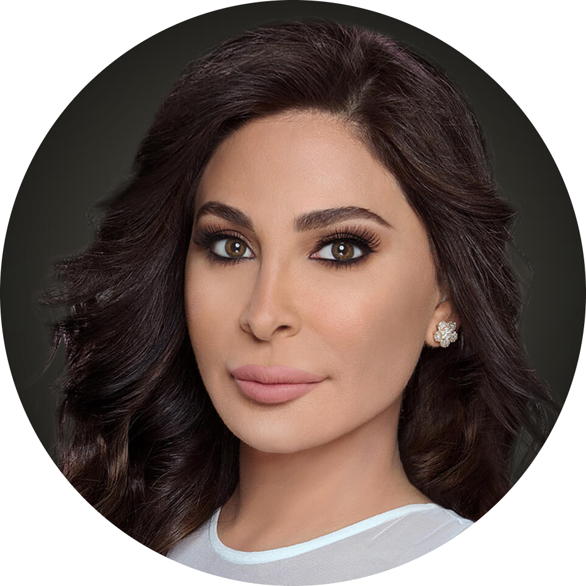

|  | Elissa:Khoury, connue sous le nom d'Elissa (إليسا) est une chanteuse libanaise. Elle est née le 27 octobre 1972 à Deir el Ahmar au Liban. Elle a vendu à ce jour plus de 45 millions d'albums. En 2005, 2006 et 2010, elle reçoit le prix de la meilleure chanteuse du Moyen-Orient aux World Music Awards à plusieurs reprises |
Discographie
notre contact:
telephone : 12345678
adress : denden
votre avis sur le site : contact us